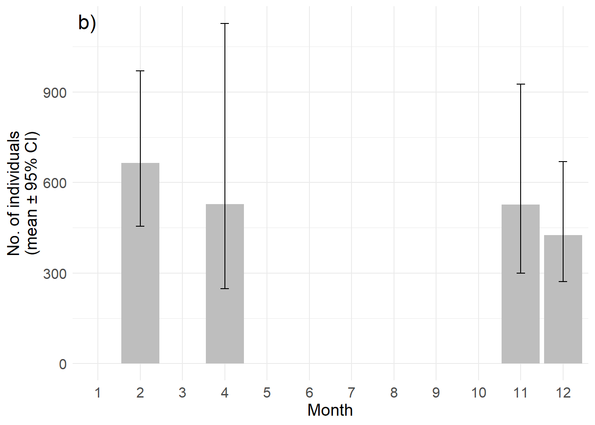

project_root <- getwd()
knitr::opts_knit$set(root.dir = project_root)
library(tidyverse)
library(Distance)
# Helper to attach covariate information to each dolphin observation.
match_covariates <- function(dol_dat, covariates_path) {
cov_df <- read.csv(covariates_path)
temp_df <- map_dfr(seq_len(nrow(dol_dat)), function(i) {
nearest_idx <- which.min(abs(dol_dat$Waypoint_number[i] - cov_df$Waypoint.number))[1]
cov_df[nearest_idx, c(
"Boat.speed..kmph.",
"Number.of.fishing.boats..small.medium",
"Number.of.fishing.boats..large",
"Number.of.tourist.boats"
)]
})
temp_df <- temp_df |>
mutate(across(everything(), ~ replace(.x, is.na(.x), 0))) |>
mutate(across(everything(), as.numeric))
dol_dat <- bind_cols(dol_dat, temp_df)
dol_dat
}
# Build the distance-sampling data frame used by Distance::ds().
build_distance_data <- function(dol_dat, scale_covariates = TRUE) {
dist_data <- tibble(
Region.Label = "Default",
Sample.Label = paste0(dol_dat$Transect.ID, "_R", dol_dat$rep),
distance = dol_dat$PDistance_m,
size = dol_dat$N_best
)
if ("Boat.speed..kmph." %in% names(dol_dat)) {
dist_data$Boat_speed <- dol_dat$Boat.speed..kmph.
} else {
dist_data$Boat_speed <- NA_real_
}
if ("Number.of.fishing.boats..small.medium" %in% names(dol_dat) &&
"Number.of.fishing.boats..large" %in% names(dol_dat)) {
dist_data$FB <- dol_dat$Number.of.fishing.boats..small.medium +
dol_dat$Number.of.fishing.boats..large
} else {
dist_data$FB <- NA_real_
}
if ("Number.of.tourist.boats" %in% names(dol_dat)) {
dist_data$TB <- dol_dat$Number.of.tourist.boats
} else {
dist_data$TB <- NA_real_
}
dist_data <- dist_data |>
mutate(across(c(distance, size, Boat_speed, FB, TB), as.numeric))
if (scale_covariates) {
dist_data <- dist_data |>
mutate(Boat_speed = as.numeric(scale(Boat_speed)),
FB = as.numeric(scale(FB)),
TB = as.numeric(scale(TB)))
}
dist_data
}
# Fit the ds() model for each survey and return the fitted object.
fit_distance_model <- function(dist_data, truncation, region_table, sample_table,
adjustment = "poly", model_label = "") {
conversion <- convert_units("meter", "kilometer", "square kilometer")
ds_model <- ds(
dist_data,
key = "hn",
adjustment = adjustment,
convert_units = conversion,
truncation = truncation,
region_table = region_table,
sample_table = sample_table
)
if (nzchar(model_label)) {
message(model_label)
}
ds_model
}Estimating dolphin density
Workflow for estimating dolphin density from distance sampling data.
Overview
This code implements the distance sampling approach to estimate dolphin densities for the five surveys. The major steps include cleaning, distance transformation, model fitting, and abundance calculation. The workflow is designed to be modular, so that each survey can be processed independently while maintaining a consistent analytical structure.
The document is organized as follows:
- setup and reusable helpers,
- survey metadata and file mapping,
- estimation workflow for each survey, and
- summary plots and abundance output.
1. Setup and helper functions
The first segment loads the required packages, and creates reusable functions for preparing the encoded detection data and fitting the distance model.
2. Survey metadata
Each survey uses a different raw data file, truncation distance, survey area, and effort vector. The metadata below keeps those choices explicit and centralised, so the model-fitting workflow remains easy to read and update.
survey_specs <- tribble(
~survey_id, ~location_file, ~covariates_file, ~truncation, ~area, ~effort, ~adjustment,
"2312", file.path(project_root, "Data/Population/Dolphins_locations_2312.csv"), file.path(project_root, "Data/Population/Dolphins_covariates_2312.csv"), 600, 347 / 2 * 600 / 1000 * 2, I(list(c(26.3, 20.2, 42.1, 59.2, 55.3 - 8.6, 42.4 + 8.6, 63.8, 37.3))), "poly",
"2504", file.path(project_root, "Data/Population/Dolphins_locations_2504.csv"), file.path(project_root, "Data/Population/Dolphins_covariates_2504.csv"), 500, 310 / 2 * 500 / 1000 * 2, I(list(c(28.6, 57.6, 34.4 + 10.7, 38.5 + 10.7, 61.1, 23.5, 16.8, 17.1))), "poly",
"2511", file.path(project_root, "Data/Population/Dolphins_locations_2511.csv"), file.path(project_root, "Data/Population/Dolphins_covariates_2511.csv"), 500, 328 / 2 * 500 / 1000 * 2, I(list(c(26, 56.8, 54.6 - 10.2, 34.7 + 10.2, 61.9, 22.7, 14.8, 14.9))), "poly",
"2602", file.path(project_root, "Data/Population/Dolphins_locations_2602.csv"), file.path(project_root, "Data/Population/Dolphins_covariates_2602.csv"), 500, 265 / 2 * 500 / 1000 * 2, I(list(c(18.5, 17.1, 23.6, 55.8, 38, 33.7 + 9, 44.4, 18.3))), "poly",
"0202", file.path(project_root, "Data/Population/Dolphins_locations_0202.csv"), NA, 400, 15 * 20 * 400 / 1000 * 2, I(list(NA_real_)), "cos"
)
survey_specs <- survey_specs |>
mutate(files_exist = pmap_lgl(list(location_file, covariates_file), function(loc, cov) {
file.exists(loc) && (is.na(cov) || file.exists(cov))
}))
survey_specs# A tibble: 5 × 8
survey_id location_file covariates_file truncation area effort
<chr> <chr> <chr> <dbl> <dbl> <list>
1 2312 C:/Users/imran/OneDr… C:/Users/imran… 600 208. <I(list [1])>
2 2504 C:/Users/imran/OneDr… C:/Users/imran… 500 155 <I(list [1])>
3 2511 C:/Users/imran/OneDr… C:/Users/imran… 500 164 <I(list [1])>
4 2602 C:/Users/imran/OneDr… C:/Users/imran… 500 132. <I(list [1])>
5 0202 C:/Users/imran/OneDr… <NA> 400 240 <I(list [1])>
# ℹ 2 more variables: adjustment <chr>, files_exist <lgl>3. Survey-specific analysis workflow
This segment runs the same distance-sampling workflow for each survey that has a valid raw data file. The code performs four essential steps: data import, perpendicular-distance calculation, covariate matching, and model fitting.
results_list <- list()
if (any(survey_specs$files_exist)) {
for (row_idx in seq_len(nrow(survey_specs))) {
survey_row <- survey_specs[row_idx, ]
if (!survey_row$files_exist) {
next
}
loc_file <- as.character(survey_row$location_file)
cov_file <- if (!is.na(survey_row$covariates_file)) {
as.character(survey_row$covariates_file)
} else {
NULL
}
# Load the raw dolphin observation file.
dol_dat <- read.csv(loc_file)
# Perpendicular distance from the transect line, in metres.
dol_dat$PDistance_m <- dol_dat$Distance_m * sin((abs(dol_dat$Angle) * (pi / 180)))
dol_dat$Start <- as.Date(dol_dat$Start, "%d-%m-%Y")
dol_dat$Sample.Label <- paste0(dol_dat$Transect.ID, "_R", dol_dat$rep)
# For surveys with covariates, attach nearest-waypoint human-activity covariates.
if (!is.null(cov_file)) {
dol_dat <- match_covariates(dol_dat, cov_file)
}
# Build the dist_data object for Distance::ds().
dist_data <- build_distance_data(dol_dat, scale_covariates = !is.null(cov_file))
# Region definition: total area surveyed, expressed in km^2.
region_table <- data.frame(
Region.Label = "Default",
Area = survey_row$area
)
# Effort per survey replicate
effort_vector <- if (is.null(survey_row$effort[[1]]) || is.na(survey_row$effort[[1]])) {
rep(15, length(unique(dol_dat$Sample.Label)))
} else {
unlist(survey_row$effort)
}
sample_table <- data.frame(
Sample.Label = unique(dol_dat$Sample.Label),
Region.Label = "Default",
Effort = effort_vector
)
# Fit the detection model.
model_name <- paste0("mod_", survey_row$survey_id)
assign(model_name, fit_distance_model(
dist_data,
truncation = survey_row$truncation,
region_table = region_table,
sample_table = sample_table,
adjustment = survey_row$adjustment,
model_label = paste("Fitting model for survey", survey_row$survey_id)
))
# Store results for later summary.
results_list[[survey_row$survey_id]] <- list(
model = get(model_name),
dist_data = dist_data,
region_table = region_table,
sample_table = sample_table,
survey_id = survey_row$survey_id,
truncation = survey_row$truncation
)
}
} else {
message("No survey files were found; the analysis is skipped in this rendered environment.")
}Notes on the model specification
- perpendicular distance is converted from metres to a detection-distance variable,
- covariates are standardised when present,
- a half-normal key function is used with a polynomial adjustment in most modern surveys,
- the February 2002 file follows a cosine adjustment instead,
- effort is entered per survey replicate using the original track-length estimates.
4. Results summary and abundance extraction
This section extracts density and abundance estimates from each fitted model and stores them in a single summary table.
# The values for all the models above are manually extracted and stroed in a dataframe for visualisation
pop <- bind_rows(
tibble(
Sl = 1,
Year = 2023,
Month = 12,
Season = "Winter",
Density = 1.637,
Density_se = 0.35,
Abundance = 1.637 * 2 * 130,
Abundance_se = 0.35 * 2 * 130,
lcl = 1.042 * 2 * 130,
ucl = 2.571 * 2 * 130
),
tibble(
Sl = 2,
Year = 2025,
Month = 4,
Season = "Summer",
Density = 2.0333,
Density_se = 0.6905,
Abundance = 2.0333 * 2 * 130,
Abundance_se = 0.6905 * 2 * 130,
lcl = 0.953 * 2 * 130,
ucl = 4.337 * 2 * 130
),
tibble(
Sl = 3,
Year = 2025,
Month = 11,
Season = "Winter",
Density = 2.0274,
Density_se = 0.5158,
Abundance = 2.0274 * 2 * 130,
Abundance_se = 0.5158 * 2 * 130,
lcl = 1.154 * 2 * 130,
ucl = 3.561 * 2 * 130
),
tibble(
Sl = 4,
Year = 2026,
Month = 2,
Season = "Winter",
Density = 2.55628,
Density_se = 0.4340,
Abundance = 2.55628 * 2 * 130,
Abundance_se = 0.4340 * 2 * 130,
lcl = 1.751 * 2 * 130,
ucl = 3.731 * 2 * 130
),
tibble(
Sl = 5,
Year = 2002,
Month = 2,
Season = "Spring",
Density = 3.646,
Density_se = 0.5939,
Abundance = 3.646 * 2 * 130,
Abundance_se = 0.5939 * 2 * 130,
lcl = 2.635 * 2 * 130,
ucl = 5.045 * 2 * 130
)
)
pop# A tibble: 5 × 10
Sl Year Month Season Density Density_se Abundance Abundance_se lcl ucl
<dbl> <dbl> <dbl> <chr> <dbl> <dbl> <dbl> <dbl> <dbl> <dbl>
1 1 2023 12 Winter 1.64 0.35 426. 91 271. 668.
2 2 2025 4 Summer 2.03 0.690 529. 180. 248. 1128.
3 3 2025 11 Winter 2.03 0.516 527. 134. 300. 926.
4 4 2026 2 Winter 2.56 0.434 665. 113. 455. 970.
5 5 2002 2 Spring 3.65 0.594 948. 154. 685. 1312.5. Abundance plot
The final graph reproduces the original manuscript-style abundance summary by plotting abundance with confidence intervals against month.
if (nrow(pop) > 0) {
fig_pop <- pop |>
mutate(Season = factor(Season, levels = c("Spring", "Summer", "Winter"))) |>
filter(Year > 2020) |>
complete(Month = 1:12) |>
ggplot(aes(x = as.factor(Month), y = Abundance, fill = as.factor(Season))) +
geom_bar(stat = "identity", fill = "gray", alpha = 1) +
geom_errorbar(aes(ymin = lcl, ymax = ucl), width = 0.2) +
theme_minimal() +
theme(
axis.text.x = element_text(size = 12),
axis.text.y = element_text(size = 12),
axis.title.x = element_text(size = 14),
axis.title.y = element_text(size = 14)
) +
labs(x = "Month", y = "No. of individuals\n(mean ± 95% CI)") +
annotate(
"text",
x = 1,
y = Inf,
label = "b)",
hjust = 1.1,
vjust = 1.5,
size = 6
)
fig_pop
}
Interpretation
The workflow estimates dolphin density from multiple surveys by combining the raw sighting distances, nearest covariates, and replicate-specific effort. The summary table is then used to compare seasonal abundance, while the final graph displays the estimated abundance and confidence intervals across the survey periods.